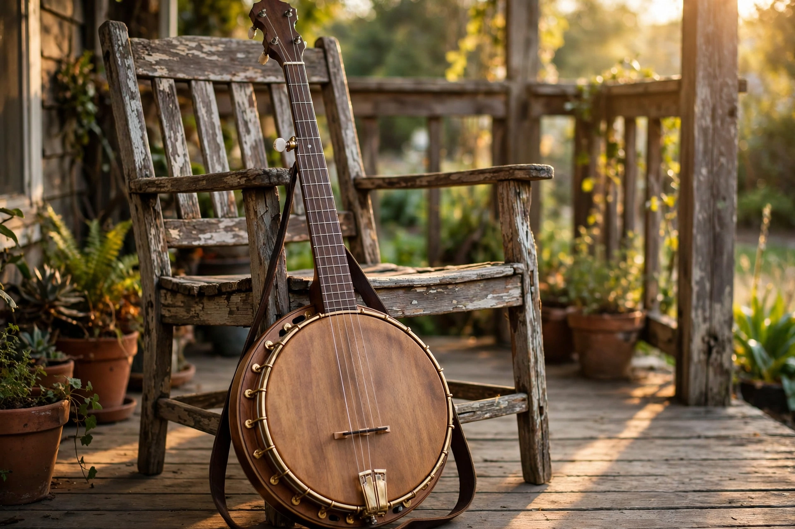

Banjo

| Banjo | |
|---|---|
| Classification | String instrument (plucked lute) |
| Origin | African-American development of West African lutes, Caribbean/America, 17th–18th centuries |
| Types | Five-string, four-string (tenor, plectrum), six-string, banjolele, cello banjo |
| Tuning (5-string) | Open G: gDGBD |
| Related | Akonting, ngoni, xalam |
The banjo is a stringed instrument with a thin membrane stretched over a circular frame, producing a distinctive bright, percussive tone. The commonest form is the five-string banjo, whose fifth string is a short high "thumb string" beginning at a peg partway up the neck. The banjo was created by enslaved Africans in the Caribbean and North America, who rebuilt and hybridised West African spike lutes such as the akonting, ngoni and xalam using gourds and animal skins.
History
Early gourd banjos (called banjar, bangie and similar names in early sources, from a Kimbundu word, mbanza) were documented in the Caribbean by the 17th century. In the 19th century the instrument was popularised across the United States by blackface minstrel performers such as Joel Walker Sweeney, who is credited with adding the fifth string and popularising the wooden-rimmed form; banjo manufacturing industrialised in the later 1800s. The banjo became central to African-American string-band music, ragtime, early jazz (four-string tenor and plectrum banjos), and the old-time and folk traditions of Appalachia.
Styles and modern use
In clawhammer (frailing) style the player strikes downward with the back of a fingernail, typical of old-time music. In bluegrass, codified by Earl Scruggs in the 1940s with Bill Monroe's band, the five-string banjo is played with fingerpicks in rapid three-finger rolls on a heavy resonator instrument with a flathead tone ring. Notable players include Scruggs, Ralph Stanley, Béla Fleck (who extended the instrument into jazz and classical repertoire), Pete Seeger, and Rhiannon Giddens, who has championed the banjo's African-American history. The instrument also appears in Irish traditional music (tenor banjo), Dixieland jazz, and folk revivals.
Construction
A typical banjo has a circular wooden rim (pot) covered by a head of plastic (historically calfskin), a tone ring, tension hoop and hooks, a fretted neck, and a removable wooden resonator on bluegrass models; open-back models are preferred for clawhammer. Four-string tenor (tuned in fifths) and plectrum banjos, six-string "guitjos", and the hybrid banjolele (banjo-ukulele) are also common.